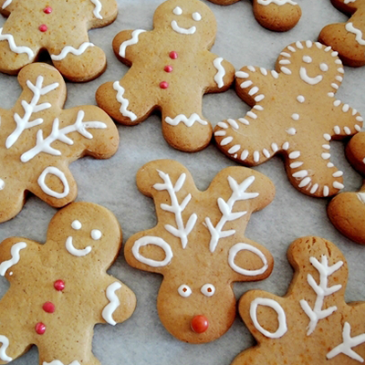

Les ingrédients
- 350g de farine
- 170g de cassonade
- 100g de beurre mou
- 100g de miel liquide doux
- 4 cuillères à café (10g) de levure
- 2 cuillères à café de mélange pour pain d’épices
- 1 œuf + 1 blanc d’œuf pour le glaçage
- 200g de sucre glace
La recette
- Préchauffe le four à 160°C. Demande à une personne adulte de t’aider à le faire.
- Mélange tous les ingrédients secs (farine, cassonade, levure, mélange pour pain d’épices). Ajoute le beurre et mélange à la main pour obtenir un résultat sableux.
- Ajoute l’œuf et le miel puis travaille la pâte jusqu’à ce que la pâte forme une boule.
- Etale la pâte sur une planche farinée avec un rouleau. Puis inspire-toi d’un dessin ou sers-toi d’un emporte-pièce pour former tes bonshommes. Pose tes biscuits sur un papier sulfurisé puis sur la plaque de cuisson.
- Fais cuire pendant 7 à 10 minutes jusqu’à ce que les biscuits commencent à dorer.
- Il ne reste plus qu’à laisser refroidir sur la plaque pendant quelques instants.
- En attendant, prépare le glaçage en ajoutant progressivement du sucre glace au blanc d’œuf. Mets beaucoup de sucre glace pour que le glaçage soit bien compact. Forme un petit cornet avec du papier sulfurisé pour servir de poche à douille et décore les bonshommes avec le glaçage. Dessine les yeux, le nez et un large sourire auquel tes amis ne pourront pas résister. Et surtout, n’oublie pas les boutons.